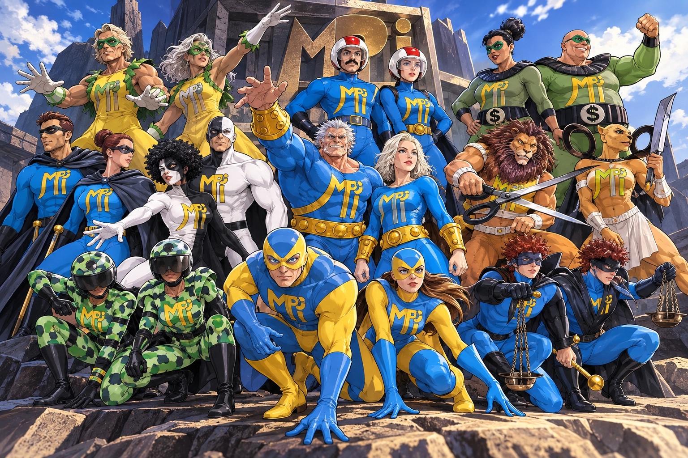

Cadastre-se
Crie seu perfil e descubra seu pilar de atuação.
Começar ↗Uma nova experiência para organizar ideias, registrar reivindicações e transformar participação em ação cidadã.

O último algarismo do ano de nascimento indica o pilar de cada integrante. Você também pode apoiar qualquer outra frente.

Registre uma Reivindicação Coletiva ou uma Reivindicação de Cidadão. A comunidade acompanha, fortalece e cobra respostas.
Registre um abuso, uma denúncia ou uma situação que precisa ser acompanhada pela comunidade. O RNC organiza seu relato para dar visibilidade e mobilizar apoio.
Iniciar minha RNC ↗Fluxo demonstrativo da página oficial de RNC.
O Movimento Popular Inteligente nasceu para mudar a maneira de pensar e agir da sociedade. Com respeito, organização e participação, a voz de cada cidadão ganha força.
Os caminhos para participar do MPI em uma experiência simples e direta.
Crie seu perfil e descubra seu pilar de atuação.
Começar ↗Apoie as ações do movimento e fortaleça esta rede.
Apoiar ↗Vista as cores do seu pilar e leve a mensagem adiante.
Ver loja ↗Este fluxo é demonstrativo. O cadastro e os registros serão conectados ao sistema oficial somente após aprovação.